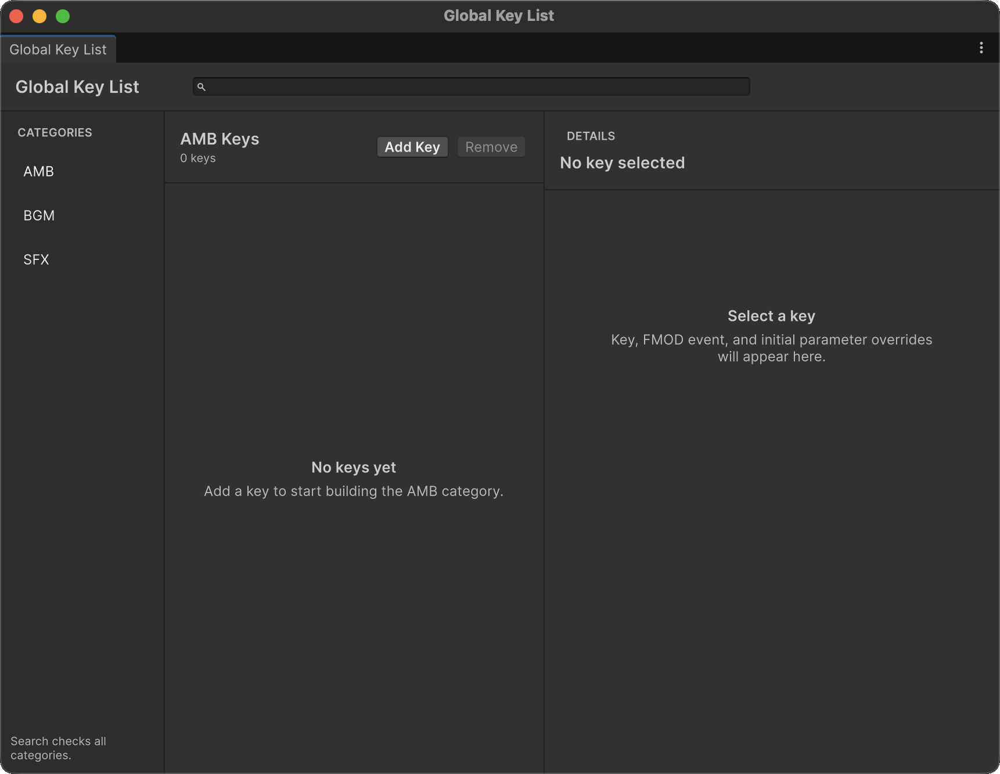

Global 및 Local Key List
Key List는 문자열 Key를 FMOD Event와 초기 Local Parameter 값에 연결합니다. Event 경로를 여러 컴포넌트에 반복해서 지정하는 대신 Stage1, Battle, Footstep과 같은 이름으로 재사용할 수 있습니다.
어떤 Key List를 사용할까요?
| 종류 | 저장 위치 | 적합한 용도 |
|---|---|---|
| Global Key List | 프로젝트의 Resources Asset |
여러 Scene에서 공통으로 사용하는 AMB, BGM, SFX Event |
LocalKeyList |
Scene 또는 Prefab의 GameObject | 특정 Scene, Prefab 또는 기능 안에서만 사용하는 Event |
AMB, BGM, SFX는 Key를 분류하고 조회할 목록을 선택하기 위한 카테고리입니다. Key를 BGM에 등록했다고 해서 Event가 자동으로 BGM Bus로 Routing되지는 않습니다. 실제 Bus Routing은 FMOD Studio에서 구성합니다.
Global Key List 만들기
Unity 상단 메뉴에서 FMOD > FMOD Plus > Global Key List를 선택합니다.

창이 처음 열릴 때 필요한 Asset이 없으면 다음 위치에 자동으로 생성됩니다.
Assets/FMOD Plus Data/Resources/
├── AMB-KeyList.asset
├── BGM-KeyList.asset
└── SFX-KeyList.asset
카테고리 선택
창 위쪽의 AMB, BGM, SFX 버튼으로 현재 편집할 목록을 선택합니다.
- AMB: Ambient Sound를 정리할 때 사용합니다.
- BGM: Background Music을 정리할 때 사용합니다.
- SFX: Sound Effect를 정리할 때 사용합니다.
카테고리 선택은 데이터 구분을 위한 것이므로 프로젝트의 명명 규칙에 맞게 사용할 수 있습니다.
Key 추가 및 편집
- 편집할 카테고리를 선택합니다.
- Add Key를 눌러 새 항목을 만듭니다.
- 오른쪽 상세 영역에서 Key 이름을 지정합니다.
- FMOD Event에서 연결할 Event를 선택합니다.
- 필요한 경우 Initial Parameters에 초기값을 추가합니다.

새 항목은 New Key, New Key (1)처럼 현재 목록에서 겹치지 않는 임시 이름으로 생성됩니다. 실제 용도를 알 수 있는 이름으로 변경하세요.
Key를 선택하면 목록에는 Key와 Event 경로가 표시되고, 상세 영역에서 실제 데이터를 편집할 수 있습니다. Event를 변경하면 이전 Event의 Parameter가 새 Event와 섞이지 않도록 기존 Initial Parameter 목록이 초기화됩니다.
검색
검색창은 AMB, BGM, SFX 전체에서 Key 이름을 찾습니다.
- 부분 문자열로 검색합니다.
- 검색할 때는 대소문자를 구분하지 않습니다.
- 결과에는 원래 카테고리가 함께 표시됩니다.
- 검색 중에는 원본 인덱스가 섞이지 않도록 드래그 재정렬이 비활성화됩니다.
- 카테고리 버튼을 누르면 검색이 지워지고 해당 카테고리 목록으로 돌아갑니다.
Important
검색은 대소문자를 구분하지 않지만 런타임 Key 조회는 대소문자를 구분합니다. Stage1과 stage1은 서로 다른 Key입니다.
순서 변경과 삭제
검색하지 않는 상태에서 항목을 드래그하여 같은 카테고리 안의 순서를 변경할 수 있습니다. Remove Key는 확인 대화상자를 거쳐 현재 항목을 삭제합니다.
추가, 삭제, 순서 변경, Event 및 Parameter 편집은 Unity Undo/Redo를 지원합니다. 변경된 Global Asset은 자동으로 저장됩니다.
Initial Parameter 편집
Event를 선택하면 해당 Event의 Local Parameter를 Add Parameter에서 추가할 수 있습니다. All을 선택하면 아직 추가하지 않은 Parameter를 모두 넣습니다.
Parameter 종류에 따라 알맞은 입력 UI가 표시됩니다.
| FMOD Parameter 종류 | 편집 UI |
|---|---|
| Continuous | 최소·최대 범위를 사용하는 실수 Slider |
| Discrete | 정수 Slider |
| Labeled | FMOD Label을 표시하는 Dropdown |
저장된 값은 해당 Key로 Event를 재생할 때 사용할 초기값입니다. Parameter를 목록에서 제거하면 FMOD Event의 기본값을 사용합니다.
FMOD Bank에서 Event를 찾을 수 없거나 Event에서 Parameter가 삭제된 경우 Parameter Not Found가 표시됩니다. 데이터를 자동으로 버리지는 않으므로 새 Event를 선택하거나 더 이상 필요 없는 항목을 직접 제거하세요.
Local Key List 만들기
다음 두 방법 중 하나로 LocalKeyList를 만듭니다.
- GameObject > Audio > FMOD > Key List를 선택합니다.
- 기존 GameObject의 Add Component에서 FMOD Studio > FMOD Plus > FMOD Local Key List를 선택합니다.

Local Key List Inspector의 기본 작업은 Global 창과 같습니다.

- Add Key로 항목을 추가합니다.
- Key 이름과 FMOD Event를 지정합니다.
- 필요한 Initial Parameter를 추가합니다.
- 목록을 검색하거나 드래그하여 정렬합니다.
검색은 현재 LocalKeyList 안에서만 수행되며, 검색 중에는 재정렬이 비활성화됩니다. Scene Object에서 편집하면 Scene 변경 상태가 기록되고, Prefab에서 편집하면 Prefab Override로 처리됩니다. Undo/Redo도 지원합니다.
Local Key List 조회 API
LocalKeyList는 Event, Parameter 또는 둘을 함께 조회할 수 있습니다.
using FMODPlus;
using FMODUnity;
using UnityEngine;
public class LocalMusicLookup : MonoBehaviour
{
[SerializeField] private LocalKeyList keyList;
[SerializeField] private FMODAudioSource audioSource;
public void Play(string key)
{
if (!keyList.TryGetEventAndParameters(
key,
out EventReference eventReference,
out ParamRef[] parameters))
{
Debug.LogWarning($"FMOD Key '{key}' was not found.");
return;
}
audioSource.clip = eventReference;
audioSource.ApplyParameter(parameters);
audioSource.Play();
}
}
| API | 결과 |
|---|---|
Count |
직렬화된 Key 항목 수 |
TryGetEvent() |
Event Reference |
TryGetParameters() |
초기 ParamRef[] |
TryGetEventAndParameters() |
Event와 Parameter를 함께 반환 |
조회에 실패하면 메서드는 false를 반환하며, Event는 기본값이고 Parameter는 빈 배열입니다.
Global Key List 조회 API
Global 목록은 카테고리별 Singleton을 사용합니다.
using FMODPlus;
using FMODUnity;
using UnityEngine;
public class GlobalMusicLookup : MonoBehaviour
{
public bool TryGetMusic(
string key,
out EventReference eventReference,
out ParamRef[] parameters)
{
eventReference = default;
parameters = System.Array.Empty<ParamRef>();
return BGMKeyList.Instance.TryGetValue(key, out eventReference) &&
BGMKeyList.Instance.TryGetParamRef(key, out parameters);
}
}
AMBKeyList, BGMKeyList, SFXKeyList는 같은 조회 API를 제공합니다.
TryGetValue()는 Event를 반환합니다.TryGetParamRef()는 초기 Parameter를 반환합니다.TryFindClip(),TryFindParamRefs(),TryFindClipAndParams()는 같은 조회를 수행하고 실패하면 Console에 오류를 기록합니다.
실패를 직접 처리하려면 TryGet* 계열을 사용하고, 누락된 Key를 반드시 오류로 남기려면 TryFind* 계열을 사용하세요. Global TryGetParamRef()는 실패 시 null을 반환할 수 있으므로 사용 전에 성공 여부를 확인합니다.
KeyReference 사용하기
KeyReference는 Global 또는 Local 목록 선택과 Key를 하나의 직렬화 가능한 값으로 묶습니다.
using FMODPlus;
using FMODUnity;
using UnityEngine;
public class KeyReferencePlayer : MonoBehaviour
{
[SerializeField] private KeyReference eventKey = new();
[SerializeField] private FMODAudioSource audioSource;
public void Play()
{
if (!eventKey.TryGetEventAndParameters(
out EventReference eventReference,
out ParamRef[] parameters))
{
Debug.LogWarning($"FMOD Key '{eventKey.Key}' was not found.");
return;
}
audioSource.clip = eventReference;
audioSource.ApplyParameter(parameters);
audioSource.Play();
}
}
TryGetEvent()은 Event만 조회하고, TryGetEventAndParameters()는 초기값까지 함께 조회합니다. 실패하면 Parameter는 빈 배열이므로 성공 여부를 확인한 뒤 사용하세요.